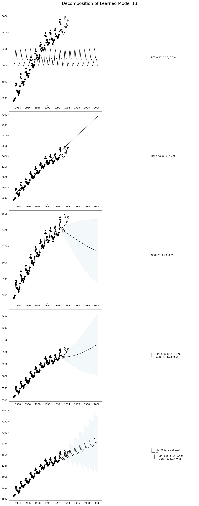

Time Series Decomposition
This tutorial shows how to decompose AutoGP models into their constituent temporal components, to gain more insight into the learned time series structures.
We will demonstrate two methods.
AutoGP.decompose. This function breaks down a composite kernel into its constituent subkernels.
AutoGP.extract_kernel. This function extracts a specific primitive kernel from a composite kernel, while discarding the others.
import AutoGPusing CSV
using Dates
using DataFrames
using PythonPlotLoading Data
AutoGP.seed!(10)data = CSV.File("assets/M1266.csv")
M3 = DataFrame(data);
df = M3[:,["ds","y"]];We next split the data into a training set and test set.
n_test = 18
n_train = DataFrames.nrow(df) - n_test
df_train = df[1:end-n_test, :]
df_test = df[end-n_test+1:end, :]
fig, ax = PythonPlot.subplots(figsize=(10,4))
ax.scatter(df_train.ds, df_train.y, marker="o", color="k", alpha=.5)
ax.scatter(df_test.ds, df_test.y, marker="o", color="w", edgecolor="k", label="Test Data")
Python: <matplotlib.collections.PathCollection object at 0x71fc21baa480>Creating an AutoGP Model
model = AutoGP.GPModel(df_train.ds, df_train.y; n_particles=18);ds_future = range(start=df.ds[end]+Dates.Month(1), step=Dates.Month(1), length=4*size(df_test)[1])
ds_query = vcat(df_train.ds, df_test.ds, ds_future)
forecasts = AutoGP.predict(model, ds_query; quantiles=[0.025, 0.975]);Let us visualize the forecasts before model fitting. The model clearly underfits the data.
fig, ax = PythonPlot.subplots(figsize=(10,4))
for i=1:AutoGP.num_particles(model)
subdf = forecasts[forecasts.particle.==i,:]
ax.plot(subdf[!,"ds"], subdf[!,"y_mean"], color="k", linewidth=.25)
ax.fill_between(subdf.ds, subdf[!,"y_0.025"], subdf[!,"y_0.975"], color="tab:blue", alpha=0.05)
end
ax.scatter(df_train.ds, df_train.y, marker="o", color="k")
ax.scatter(df_test.ds, df_test.y, marker="o", color="w", edgecolor="k", label="Test Data")
Python: <matplotlib.collections.PathCollection object at 0x71fc1d32ea20>Model Fitting via SMC
AutoGP.fit_smc!(model; schedule=AutoGP.Schedule.linear_schedule(n_train, .025), n_mcmc=50, n_hmc=25, verbose=false);forecasts = AutoGP.predict(model, ds_query; quantiles=[0.025, 0.975]);fig, ax = PythonPlot.subplots(figsize=(10,4))
for i=1:AutoGP.num_particles(model)
subdf = forecasts[forecasts.particle.==i,:]
ax.plot(subdf[!,"ds"], subdf[!,"y_mean"], color="k", linewidth=.5)
ax.fill_between(
subdf.ds, subdf[!,"y_0.025"], subdf[!,"y_0.975"];
color="tab:blue", alpha=0.05)
end
ax.scatter(df_train.ds, df_train.y, marker="o", color="k", label="Observed Data")
ax.scatter(df_test.ds, df_test.y, marker="o", color="w", edgecolor="k", label="Test Data")
Python: <matplotlib.collections.PathCollection object at 0x71fc17d37290>Hierarchical Decomposition of Kernels
Let us first inspect the learned kernels.
weights = AutoGP.particle_weights(model)
kernels = AutoGP.covariance_kernels(model)
for (i, (k, w)) in enumerate(zip(kernels, weights))
println("Model $(i), Weight $(w)")
display(k)
endModel 1, Weight 0.09658896969666558
+
├── PER(0.77, 0.10; 0.03)
└── GE(1.79, 1.74; 0.20)
Model 2, Weight 0.039614762558316634
+
├── ×
│ ├── PER(0.74, 0.10; 0.03)
│ └── LIN(0.09; 0.46, 0.02)
└── GE(1.41, 1.73; 0.16)
Model 3, Weight 0.06625733864702288
+
├── PER(0.89, 0.10; 0.03)
└── GE(1.64, 1.73; 0.12)
Model 4, Weight 0.010545550106178718
+
├── ×
│ ├── +
│ │ ├── PER(0.73, 0.10; 0.04)
│ │ └── LIN(0.12; 0.48, 0.03)
│ └── LIN(0.76; 0.05, 0.03)
└── GE(1.12, 1.82; 0.09)
Model 5, Weight 0.01043051073070849
+
├── ×
│ ├── +
│ │ ├── PER(0.73, 0.10; 0.04)
│ │ └── LIN(0.25; 0.07, 0.24)
│ └── LIN(0.76; 0.05, 0.03)
└── GE(1.12, 1.82; 0.09)
Model 6, Weight 0.10089196157472988
+
├── PER(0.74, 0.10; 0.03)
└── +
├── LIN(1.36; 0.15, 0.06)
└── GE(1.41, 1.73; 0.16)
Model 7, Weight 0.06760101185923048
+
├── PER(0.95, 0.10; 0.03)
└── GE(1.68, 1.77; 0.21)
Model 8, Weight 0.036215946339597245
+
├── PER(0.91, 0.10; 0.03)
└── +
├── GE(0.78, 1.73; 0.05)
└── LIN(0.13; 0.08, 0.07)
Model 9, Weight 0.05838021457226862
+
├── PER(0.89, 0.10; 0.03)
└── GE(1.64, 1.73; 0.12)
Model 10, Weight 0.010614087663444665
+
├── ×
│ ├── +
│ │ ├── PER(1.04, 0.10; 0.04)
│ │ └── LIN(0.37; 0.07, 1.43)
│ └── LIN(0.13; 0.34, 0.06)
└── GE(1.62, 1.81; 0.10)
Model 11, Weight 0.03466466846299965
+
├── PER(0.91, 0.10; 0.03)
└── +
├── LIN(0.66; 0.14, 0.42)
└── GE(0.78, 1.73; 0.05)
Model 12, Weight 0.061442233630051295
+
├── LIN(0.40; 0.22, 0.52)
└── +
├── PER(0.89, 0.10; 0.03)
└── GE(1.64, 1.73; 0.12)
Model 13, Weight 0.04688201588759647
+
├── PER(0.95, 0.10; 0.03)
└── +
├── LIN(0.49; 0.10, 0.68)
└── GE(1.53, 1.71; 0.06)
Model 14, Weight 0.07199528556277592
+
├── PER(0.67, 0.10; 0.03)
└── GE(1.09, 1.71; 0.16)
Model 15, Weight 0.039916775290948496
+
├── LIN(0.46; 0.03, 0.56)
└── +
├── PER(0.91, 0.10; 0.03)
└── GE(0.78, 1.73; 0.05)
Model 16, Weight 0.06695006913745713
+
├── LIN(0.63; 0.13, 0.31)
└── +
├── PER(0.89, 0.10; 0.03)
└── GE(1.22, 1.69; 0.09)
Model 17, Weight 0.09300479594368523
+
├── PER(0.74, 0.10; 0.03)
└── GE(1.41, 1.73; 0.16)
Model 18, Weight 0.08800380233632281
+
├── PER(0.67, 0.10; 0.03)
└── GE(1.09, 1.71; 0.16)We now use AutoGP.decompose to hierarchically break down the composite kernel into all the constituent subkernels.
decomposed_models = AutoGP.decompose(model);# Helper function to pretty print covariance.
function show_string(x)
io = IOBuffer()
Base.show(io, MIME("text/plain"), x)
return String(take!(io))
end
# Plot the decomposition of `model` into its constituent parts.
function plot_decomposition(model::AutoGP.GPModel)
kernels = AutoGP.covariance_kernels(model)
forecasts = AutoGP.predict(
model, ds_query;
quantiles=[0.025, 0.975]);
fig, axes = PythonPlot.subplots(
nrows=AutoGP.num_particles(model),
ncols=2,
tight_layout=true,
figsize=(12, 6*AutoGP.num_particles(model)),
)
for i=1:AutoGP.num_particles(model)
subdf = forecasts[forecasts.particle.==i,:]
# axes[i].set_title(show_string(kernels[i]), ha="left")
axes[i-1,0].plot(subdf[!,"ds"], subdf[!,"y_mean"], color="k", linewidth=1, label=show_string(kernels[i]))
axes[i-1,0].fill_between(
subdf.ds, subdf[!,"y_0.025"], subdf[!,"y_0.975"];
color="tab:blue", alpha=0.05)
axes[i-1,0].scatter(df_train.ds, df_train.y, marker="o", color="k", label="Observed Data")
axes[i-1,0].scatter(df_test.ds, df_test.y, marker="o", color="w", edgecolor="k", label="Test Data")
axes[i-1,1].text(0.5, 0.5, show_string(kernels[i]), transform=axes[i-1,1].transAxes, va="center", ha="left")
axes[i-1,1].set_axis_off()
end
return fig, axes
endplot_decomposition (generic function with 1 method)Let us plot the decomposition of a given particle in the ensemble.
idx = 13
fig, ax = plot_decomposition(decomposed_models[11]);
fig.suptitle("Decomposition of Learned Model $(idx)", fontsize=18, va="center", y=1);
"STL" Style Decomposition
An alternative approach to decomposing kernels is using AutoGP.extract_kernel, which retains only a specific primitive kernel while discarding the others. In the following example, we will extract the AutoGP.GP.Linear, AutoGP.GP.Periodic, and AutoGP.GP.GammaExponential kernels from each learned particle to produce an "STL" style decomposition.
model_per = AutoGP.extract_kernel(model, AutoGP.GP.Periodic);
model_ge = AutoGP.extract_kernel(model, AutoGP.GP.GammaExponential);
model_lin = AutoGP.extract_kernel(model, AutoGP.GP.Linear);Let us study the original and decomposed kernels for a given particle.
Unlike a traditional time series decomposition, which typically assumes a fixed additive or multiplicative structure, these decompositions retain the learned structure. For example, the decomposition for Linear may have a quadratic term, if the overall kernel has a subexpression of the form LIN * LIN.
The kernel structure is retained by using the AutoGP.GP.Constant to act as a "noop", as shown below. See also AutoGP.extract_kernel for full details.
idx = 2
println("Model $(idx) - FULL"); display(AutoGP.covariance_kernels(model)[2])
println("Model $(idx) - LIN only"); display(AutoGP.covariance_kernels(model_lin)[2])
println("Model $(idx) - PER only"); display(AutoGP.covariance_kernels(model_per)[2])
println("Model $(idx) - GE only"); display(AutoGP.covariance_kernels(model_ge)[2])Model 2 - FULL
+
├── ×
│ ├── PER(0.74, 0.10; 0.03)
│ └── LIN(0.09; 0.46, 0.02)
└── GE(1.41, 1.73; 0.16)
Model 2 - LIN only
+
├── ×
│ ├── CONST(1.00)
│ └── LIN(0.09; 0.46, 0.02)
└── CONST(0.00)
Model 2 - PER only
+
├── ×
│ ├── PER(0.74, 0.10; 0.03)
│ └── CONST(1.00)
└── CONST(0.00)
Model 2 - GE only
+
├── ×
│ ├── CONST(1.00)
│ └── CONST(1.00)
└── GE(1.41, 1.73; 0.16)We can now obtain forecasts corresponding to the Linear, Periodic, and GammaExponential components in each particle.
forecasts_lin = AutoGP.predict(model_lin, ds_query .+ Day(1); quantiles=[0.025, 0.975]);
forecasts_per = AutoGP.predict(model_per, ds_query .+ Day(1); quantiles=[0.025, 0.975]);
forecasts_ge = AutoGP.predict(model_ge, ds_query .+ Day(1); quantiles=[0.025, 0.975]);fig, axes = PythonPlot.subplots(figsize=(10,14), nrows=3, tight_layout=true)
for (ax, m, f) in zip(axes, [model_lin, model_per, model_ge], [forecasts_lin, forecasts_per, forecasts_ge])
for i=1:AutoGP.num_particles(m)
subdf = f[f.particle.==i,:]
ax.plot(subdf[!,"ds"], subdf[!,"y_mean"], color="k", linewidth=.5)
ax.fill_between(subdf.ds, subdf[!,"y_0.025"], subdf[!,"y_0.975"]; color="tab:blue", alpha=0.05)
end
ax.scatter(df_train.ds, df_train.y, marker="o", color="k", label="Observed Data")
ax.scatter(df_test.ds, df_test.y, marker="o", color="w", edgecolor="k", label="Test Data")
end
axes[0].set_title("STRUCTURE: LIN")
axes[1].set_title("STRUCTURE: PER")
axes[2].set_title("STRUCTURE: GE")
Python: Text(0.5, 1.0, 'STRUCTURE: GE')